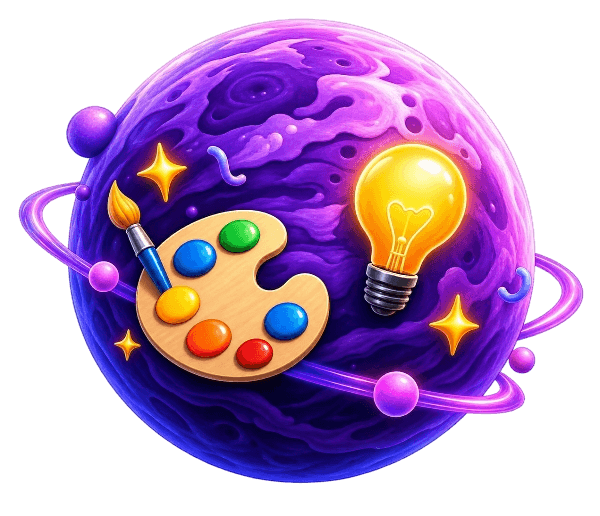
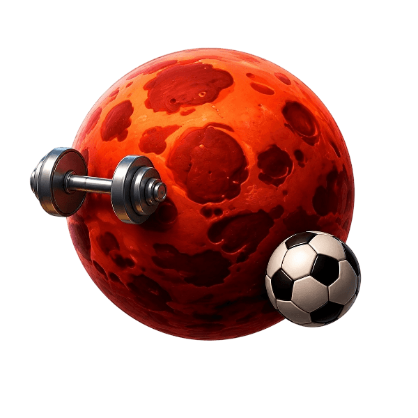
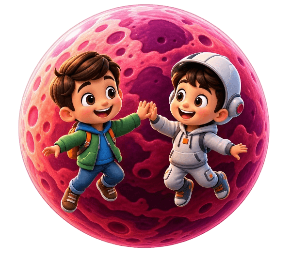
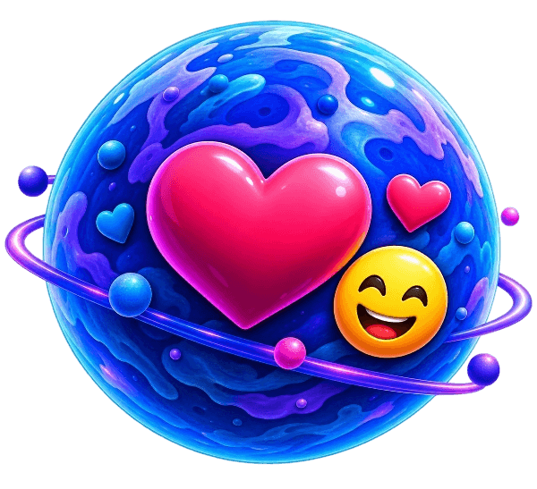

Hayot uchun kerakli 8 ta eng muhim ko'nikma.
Har bir sayyora ularning yashirin salohiyatini ochishga yordam beradi
Kelajak kasblarini kashf etish va maqsad qo'yish.
Merkuriy
KasblarKelajak kasblarini kashf etish va maqsad qo'yish.
O'z mehnati bilan topgan tangalarini to'g'ri sarflash.

Venera
Virtual do'konO'z mehnati bilan topgan tangalarini to'g'ri sarflash.
Sokratik AI-ustoz bilan mustaqil fikrlashni o'rganish.

Yer
Kognitiv ta'limSokratik AI-ustoz bilan mustaqil fikrlashni o'rganish.
Ekrandan uzilib, real tana harakatlarini bajarish.

Mars
Jismoniy faollikEkrandan uzilib, real tana harakatlarini bajarish.
Kunlik reja tuzish va vaqtni to'g'ri taqsimlash.
Yupiter
O'z-o'zini boshqarishKunlik reja tuzish va vaqtni to'g'ri taqsimlash.
Mantiqiy fikrlashni kuchaytiruvchi bosqichli masalalar.
Saturn
MatematikaMantiqiy fikrlashni kuchaytiruvchi bosqichli masalalar.
Faol so'z boyligi va to'g'ri talaffuz amaliyoti.

Uran
Ingliz tiliFaol so'z boyligi va to'g'ri talaffuz amaliyoti.
Kichkintoyning o'z hissiyotlarini tushunishi va boshqarishi.

Neptun
Emotsional savodxonlikKichkintoyning o'z hissiyotlarini tushunishi va boshqarishi.